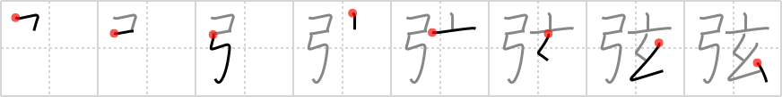

弦
← →
bowstring

Reading:
On-Yomi: ゲン — Kun-Yomi: つる
Heisig story:
Bow . . . mysterious.
Koohii stories:
1) [nyquil] 5-3-2007(145): A magic bow that only Gandalf can yield: there is no bowstring on it, and he uses his magic to fire arrows.
2) [cjon256] 23-6-2006(115): A bow with a mysterious invisible bowstring.
3) [DavidZ] 3-4-2011(28): TIP: This is used for string instruments, NOT bow & arrow. STORY: The greatest master of the violin bow and bowstring was the mysterious Paganini… 弦 [つる].
4) [decamer0n] 31-5-2007(25): It was always (and still is) a bit mysterious to me just what type of bowstring was supposed to be used on Chewbacca's laser bolt crossbow.
5) [jaresty] 14-11-2007(18): Legolas asks Gandalf to conjure him a new bowstring.